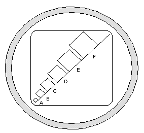

Operating Documentation
Direction 5134894-800, Rev# 9
GOC4 Upgrade Installation & Service Information
Operating Documentation |
| Last Revised: | 8 August 2005 |
This module includes the following sections:
| FE Name: | ____________________ | Oracle / FDOnce#: | ____________________ |
| System ID: | ____________________ | ||
| Start Date: | ____________________ | Completion Date: | ____________________ |
| Hours Spent: | ____________________ | Number of Trips: | ____________________ |
| Upgrade System Type: | ________________________________________ | ||
 Remove and Recycle any extra cardboard as required
Remove and Recycle any extra cardboard as required
Clean equipment as needed
Touch-up nicks and scratches (as needed).
Store customer materials appropriately.
Store service documents, tools, and materials appropriately
Install all console covers
Install seismic brackets as required
Completed all required calibration
Not Required or Install Completed - Complete AW
Not Required or Install Completed - Complete Filming/Camera/DASM
Not Required or Install Completed - Complete UPS
Not Required or Install Completed - Verify modem operation
Not Required or Install Completed - Verify that all customer software options are operational
Not Required or Install Completed - Verify Remote Video Connections
The equipment or material being removed by the GRE upgrade have a potential value for service of the installed base. GE must control the disposition of such material. Disposition of the removed material is per GE Medical Systems Policy and Procedures. For details of the return policy, please see Discarded Material Return Process (GRE).
Complete all HHS documentation. Complete
Write Install related CQAs as needed.
Complete all dispatching activities (03-04-10 codes).
Complete customer acceptance checks/test.
Complete system transfer and notify appropriate GE personnel.
Communicate with the customer and address installation issues.
Field Engineer Sign-off: ________________________________________
FE Installation Comments / Issues: ________________________________________
________________________________________________________________________________
________________________________________________________________________________
________________________________________________________________________________
Return to: Your Install specialist or sales person
William.Gibson@med.ge.com HHS
Site Engineer copy
UPS installed and functional test completed.
Refer to directions shipped with uninterruptible power system (UPS):
Powerware B7999PS
Installation support phone numbers found in shipped documentation or in the Pre-Installation Manual.
Refer to documentation shipped with the injector.
Complete a Functional test of the injector.
The position of the ceiling mount assembly must allow the ceiling stand movement and gantry to tilt, typically 20 degrees, without interference.
Network items installed and functional tests completed.
Refer to documentation shipped with components
Verify customer software options are installed and functional.
Refer to:
GE Prints and schematics for mechanical (physical) location of option
FDO shipment for identification of items
Installation Specialist for installation instructions if they differ from print
Smart Score
Smart Breath
CT Perfusion
Linux systems require different hardware components
Teleradiology
Auxiliary Monitor
Flat Panel
CRT
Refer to documentation shipped with components.
Refer to documentation shipped with components.
| Only use the Installation manual that arrives with your system for installation. Any other revisions of this manual may not exactly match your system. | |
For more information on HHS forms, refer to form FDA2579. Click on the following link, to open this form in Microsoft Excel: hhs_2579_doc_203137.xls
Locate the HHS data, sent from the factory, in the software collector box.
Retain this data with the HHS data collected at the site, per your local procedure.
A complete generator RECAL is not required.
| NOTE: | If any one of the calibration procedures fail, data collected is different, or you replace any component in the High Voltage section, YOU MUST RECALIBRATE THE SYSTEM. To recalibrate the system, refer to procedures in the System Service manual. |
Complete the Product Locator Report and mail it.
Add a copy of the Product Locator Data sheet to this chapter of the book.
Collect all factory supplied HHS Data sheets, all HHS data and all Product Locator information. Retain this information, per your local procedure.
Table 1: Data Record
| Where Installed ___________________________________________________________________ | |
| City ___________________________________ | State __________________________________ |
| Customer's Telephone Number _____________ | Room No. ______________________________ |
| System I.D. No. ___________________________________________________________________ | |
| Operator's Console (Master Control) | |
| Model Number ___________________________ | Serial Number ___________________________ |
| System Gantry | |
| Model Number ___________________________ | Serial Number ___________________________ |
| Dates of Tests __________________________ | Performed by ___________________________ |
Table 2: Test Equipment Used
| Test Equipment Used (If Applicable) | ||||
| Name | Manufacturer | Model Number | Serial Number | Calib. Due |
| DMM | ||||
Perform several scans (see below).
Verify that the X-ray ON lights are on during the scans. Check boxes in Table 3.
Table 3: X-Ray Light Chart
| Light On? | Light Locations |
| SCIM |
| Gantry Front |
| Gantry Back (use a mirror to view) |
| Room Light |
If you are not on the Service Desktop, click on the [Service
Desktop] icon. 
Select [Diagnostics] .
Select [Diagnostic Data Collection]
Set the scan time to 2.00
Set the Kv to 80
Set the ma to 40.
Initials: _________________
X-Ray Indicators on Front and Back of Gantry Illuminate During X-Ray
Refer to Auto CT N Number Adjustment.
All CT N numbers for all calibrated techniques fall within 0 +1.5 HU.
All Values 0+1.5 HU? Yes:
Make sure the X-Ray warning label appears in the correct location on the SCIM.
Initials:_____________________
Check box when complete.
Detailed Calibrations completed and CT N Number adjustment completed. The Number of Phantom Cals vary with site-specific scanning protocols.
UNUSUAL ALIASING, OTHER ARTIFACTS
Illustration 1: Unusual Aliasing, Other Artifacts

Visual inspection for unusual aliasing, and other artifacts. Visual
results acceptable? Yes:
Functional tests completed.
Power and ground audit completed.
Seismic kit installed (if needed in your area).
Injector functional tests completed.
AW functional tests completed.
Filming/Camera/DASM functional tests completed.
UPS functional tests completed.
Network items installed and functional tests completed.
Verify that all customer software options are installed and functional.
Teleradiology Connections (Refer to “Remote & Auxiliary
Monitors” in DICOM Setup)
Clean system with supplies shipped with your system.
Touch-up nicks and scratches (as needed).
Install pads and stickers (as needed).
Store customer materials appropriately.
Store service documents, tools, and materials appropriately.
GOC1 Console is shipped on a pallet. Do Not return pallet to GEMS.
Complete all HHS documentation. Complete Install CQAs as needed.
Complete all dispatching activities (03-04-10 codes).
Complete customer acceptance checks/test.
Complete system transfer and notify appropriate GE personnel.
Communicate with the customer and address installation issues.
Several of the forms in this chapter may be completed and submitted electronically by following the procedure described below.
| Be certain to save a copy (use Save As) of any completed form to a local hard drive, BEFORE submission. | |
To select and open the desired form, click on the appropriate link below. Either Microsoft® Word or Excel will launch, depending upon the type of form.
Microsoft® Word documents:
Microsoft® Excel spreadsheet:
A warning box similar to Illustration 2 may appear. Click [Yes] , to enable the document's macros.
Complete the form (<Tab> to move between fields).
Submit the form, by choosing File > Send To > Mail Recipient. Enter the e-mail addresse(s) shown at the end of the signature section of the form in the Send To field.
Illustration 2: Macro Warning
Record valuable system information in the appropriate data sheets (sheet names are listed below - click on PDF icon to view data sheets). Consult with your customer or network administrator to obtain the information. Understanding how the customer plans to use their LightSpeed 4.X scanner, and their network and filming expectation reduces the time required to reconfigure the system.
Manual Film Composer Options
System Network Configuration
Networking Application (Image transfer) Configuration
DASM Laser Camera Configuration
DICOM Print Camera Configuration
DICOM Print Camera Advanced Configuration
Media File 1: System Configuration Data Sheets